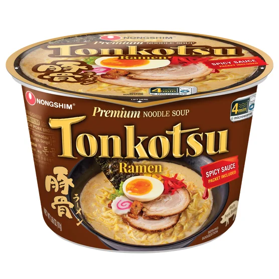

Spicy Tonkotsu Ramen
Recipe Overview:
This is my go to recipe for a quick bowl of ramen at home.
- Prep: 15 Minutes
- Cook: 15 Minutes
- Serves: 1
Ingredients:
- 1 bowl or packet of instant ramen, I use Nongshim Spicy Tonkotsu Ramen

Optional Ingredients:
- 1 tsp extra virgin olive oil, or any neutral tasting oil
- 1/2 tsp soy sauce
- 1/2 tsp toasted sesame oil
- 1/2 tbsp unsalted butter, for added richness
- 1 clove of garlic, minced
- 1 medium shallot or a quarter of any medium onion, diced
- 1/4 cup diced vegetable of your choosing, I like to add fresh carrot
- 1 egg, softboiled if preferred
- 4 pieces of organic tofu, cut bite sized
- 2 strips of bacon, diced
- 4 pieces of frozen, shaved beef chuck
- 1 stalk of spring onion, thinly sliced for garnish
- 1/2 tsp toasted sesame seeds, sprinkled on top for garnish
Steps:
- Heat a medium saucepan over medium-low heat
- While the pan gets hot prep your vegetables
- With your veggies prepped and your pan hot, add the oil and butter
- Add the onion and any other veggies to the pot and saute the veggies for 2 minutes
- While the veggies soften, dice the bacon and throw it in along with the garlic
- At this point we are going to turn the heat up to high
- Now you can add any seasoning packets that come with the instant ramen, as well as the soy and sesame oil
- Stir constantly for two minutes on high heat, then add the recommended amount of water for your instant ramen.
- Cover the saucepan and let come to a rolling boil
- Once boiling add any other protein to the pot, including tofu, beef, and egg
(I like to carefully crack and drop a raw egg into the boiling broth for a runny yolk)
- After letting your proteins cook for a minute, add your noodles and cover again
- Noodle cook time will vary depending on packaging, but at a rolling boil most should be done in under 2 minutes for al dente
- Transfer noodles and broth into a bowl and top with any garnish
- Enjoy a nice, filling bowl of ramen noodle soup!
Ramen Egg Recipe:
If you wish to go a step further, here is a recipe for perfect soft boiled ramen eggs.
Ingredients:
- 6 large eggs
- 1 tbsp vinegar
- 1/4 cup soy sauce
- 1/4 cup mirin
- 1/4 cup sugar
- 1/4 cup water
Steps:
- Bring a large saucepan filled with water to a rolling boil over high heat
- Add the vinegar and carefully lower the eggs into the water
- Set a timer for 7 minutes 30 seconds
- While the eggs boil prepare a bowl of ice water
- Drain saucepan and immediately submerge eggs in ice water bath to stop cooking once timer finishes
- While eggs cool, prepare a tupperware container or deep mixing bowl with the egg marinade
- Add soy, mirin, sugar, and water to container and whisk until combined
- Carefully crack the cooled eggs, peeling the shells off
- Submerge peeled eggs in marinade overnight and enjoy in your next bowl of ramen!